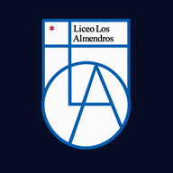
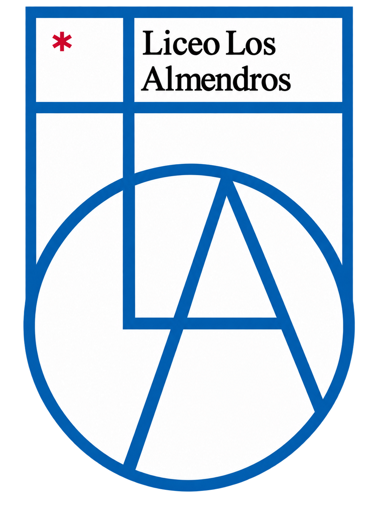

Feria Científica 2026
Comprobando tu acceso…
Preparando la feria…
Guardaremos los juegos, imágenes y audios antes de comenzar.

Comprobando tu acceso…
Guardaremos los juegos, imágenes y audios antes de comenzar.


¡La feria sigue contigo! Guarda un pedacito de este día especial y vuelve a vivir la emoción de explorar, jugar y descubrir.
Un recuerdo conmemorativo de nuestra Feria Científica 2026, para que la curiosidad nos acompañe mucho más allá de la feria.
¡Comencemos la aventura!Elige tu misión. Toca, juega y déjate sorprender.
La feria termina.
Las ganas de descubrir, nunca.
Apunta al mismo QR de activación del Liceo Los Almendros que se usa en Android.
Preparando cámara…
La imagen se lee en este dispositivo; no se envía a un servidor.